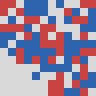
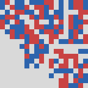
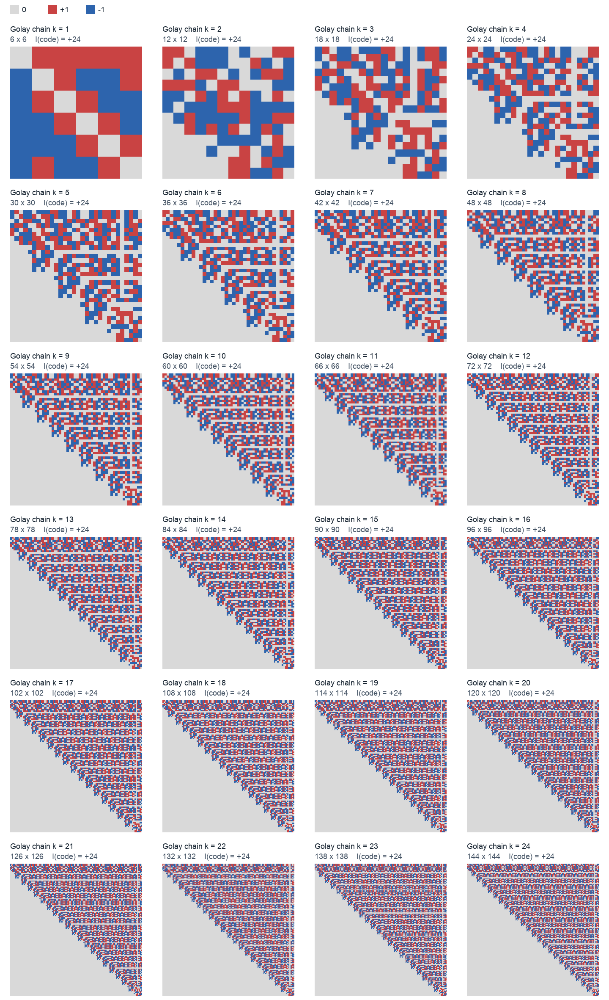

The index of self-dual ternary codes
A proof of a conjecture of Gaiotto and Johnson-Freyd
Version of 23 October 2026.
Abstract. The index of a self-dual ternary code is the number of its codewords of full support, counted with the sign \(\prod_i\chi(c_i)\), where \(\chi\) is the quadratic character of \(\mathbb F_3\). For a code of length \(n\) it is the Witten index of the holomorphic \(\mathcal N=1\) superconformal field theory of central charge \(n\) that Gaiotto and Johnson-Freyd attach to the code [GJF]. They proved that this index is divisible by \(24\) when \(24\mid n\) and by \(12\) when \(12\mid n\). They conjectured that it is always divisible by \(24\) and that the value \(24\) occurs at every length \(12k\). We prove both statements.
Divisibility by \(8\) follows from three facts: an identity \(\mathrm{Index}(C)+\mathrm{Index}(C')=4\,\mathrm{Index}(C\cap C')\) for neighboring self-dual codes, the parity of \(\mathrm{Index}(C\cap C')\), and the connectivity of the neighbor graph. Combined with \(12\mid\mathrm{Index}\) from [GJF], this gives \(24\mid\mathrm{Index}\). For the existence statement, we glue \(k\) copies of the ternary Golay code along two isotropic vectors at each junction. The resulting self-dual code of length \(12k\) has index \((-1)^k\,24\). The proof reduces to one identity \(Tu=-u\) for an \(81\times81\) integer matrix, which we give as a certificate with two check scripts.
Status. Both proofs are complete as written here. The divisibility proof (Section 2) uses one cited input, Theorem 1.3 of [GJF], for the factor 3; everything else is elementary. The existence proof (Section 3) rests on one exact finite identity (Proposition 9). We give it as a machine-checkable certificate, and it was recomputed by three programs written separately from the one that found it (Section 5). Both proofs were checked by AI agents other than the ones that found them, among them an audit by the Codex team (Section 6). They have not been refereed externally. We are not aware of an earlier proof of either half of the conjecture, but our literature search, done on 19–20 October 2026, was not exhaustive.
Sketches of both proofs appear in D. Pei, Construction of holomorphic SCFTs with minimal index [Pei, Section 5].
- Statement
- Divisibility by 24
- Index 24 at every length 12k: the Golay chain
- Remarks
- Code, certificate and checks
- Who did what
- References
1. Statement
Conventions. A ternary code of length \(n\) is a linear subspace of \(\mathbb F_3^n\), with the dot product \(x\cdot y=\sum_ix_iy_i\). The dual of a subspace \(W\) is \(W^\perp\). A code \(C\) is self-dual if \(C=C^\perp\), so \(\dim C=n/2\). Self-dual ternary codes exist only for \(4\mid n\) [CS]. A subspace \(W\) is totally isotropic if \(x\cdot y=0\) for all \(x,y\in W\). Since the characteristic is odd, this is the same as \(x\cdot x=0\) for all \(x\in W\), and \(W\) is then self-dual exactly when \(\dim W=n/2\). Let \(\chi:\mathbb F_3\to\{0,\pm1\}\) be the quadratic character, with \(\chi(0)=0\), \(\chi(1)=1\) and \(\chi(-1)=-1\). For \(x\in\mathbb F_3^n\) put \(\chi(x)=\prod_{i=1}^n\chi(x_i)\). This is \(\pm1\) if \(x\) has full support and \(0\) otherwise. For any finite set \(X\subseteq\mathbb F_3^n\), such as a subspace or a coset, put \[\mathrm{Index}(X)=\sum_{x\in X}\chi(x),\] the signed number of full-support vectors in \(X\). Throughout, the length \(n\) is positive. (For \(n=0\), the empty word would count as a full-support word of index 1.)
Every codeword of a self-dual code satisfies \(\mathrm{wt}(x)\equiv x\cdot x=0\) mod 3. So full-support codewords, and hence a nonzero index, can occur only when \(3\mid n\), that is, when \(12\mid n\). Gaiotto and Johnson-Freyd attach to a self-dual ternary code \(C\) of length \(n\) a holomorphic \(\mathcal N=1\) vertex operator superalgebra \(V_{\Lambda(C)}\) of central charge \(n\), built on the odd unimodular lattice \(\Lambda(C)=\{x/\sqrt3:\ x\in\mathbb Z^n,\ x\bmod 3\in C\}\). The Witten index of \(V_{\Lambda(C)}\) is \(\mathrm{Index}(C)\), up to an overall sign convention [GJF]. They prove the following theorem and state the following conjecture.
Theorem ([GJF, Thm 1.3]) cited Let \(C\) be a self-dual ternary code of length \(n=12k\), \(k\ge1\). Then \(24\mid\mathrm{Index}(C)\) if \(k\) is even, and \(12\mid\mathrm{Index}(C)\) if \(k\) is odd.
Conjecture ([GJF, Conj. 1.4]) For every \(k\ge1\), the index of every self-dual ternary code of length \(12k\) is divisible by \(24\), and some self-dual ternary code of length \(12k\) has index \(24\).
Both statements are paraphrased; we checked them against the arXiv text of [GJF] on 19 October 2026. The proof of Theorem 1.3 in [GJF] uses the theta functions of the two even unimodular neighbors \(\Lambda^\pm\) of \(\Lambda(C)\) and a divisibility theorem of Borcherds [Bor, Thm 12.1] (see also [Hop, Thm 5.10]). For \(n\equiv12\) mod 24, the neighbors \(\Lambda^\pm\) are odd and this method does not apply; the factor 12 then follows from \(\mathrm{Index}(C\oplus C)=\mathrm{Index}(C)^2\). The authors write that they know no elementary proof. Before this note, codes of index 24 were known for \(k\le5\) [GJF] and, from computer searches, for \(k=6\)–11, 13–16, 18 and 21 [Notes].
Theorem A (divisibility) proved For every \(k\ge1\), the index of every self-dual ternary code of length \(12k\) is divisible by \(24\).
Theorem B (existence) proved For every \(k\ge1\), the self-dual ternary code \(C_k\) of length \(12k\) defined in Section 3 has \(\mathrm{Index}(C_k)=(-1)^k\,24\). Negating one coordinate of \(C_k\) gives a self-dual code of index \((-1)^{k+1}\,24\). So for every \(k\ge1\) there are self-dual ternary codes of length \(12k\) with index \(24\) and with index \(-24\).
Together, Theorems A and B prove Conjecture 1.4 of [GJF]. A self-dual code of positive length not divisible by 12 has index 0, as noted above, so Theorem A holds for every self-dual ternary code of positive length. The new part of Theorem A is the case of odd \(k\). Our proof of the factor \(8\) covers every \(k\), so it also gives an elementary proof of the 2-part of [GJF, Thm 1.3]. The factor \(3\) is still taken from [GJF].
2. Divisibility by 24
Two self-dual codes \(C\neq C'\) of length \(n\) are neighbors if \(\dim(C\cap C')=n/2-1\). Lemmas 1 and 3 hold for arbitrary subspaces, not only for codes.
Lemma 1 (Poisson summation) If \(4\mid n\) and \(W\subseteq\mathbb F_3^n\) is a subspace, then \[\mathrm{Index}(W^\perp)=3^{\,n/2-\dim W}\,\mathrm{Index}(W).\]
Let \(\omega=e^{2\pi i/3}\) and \(f(x)=\chi(x)\). The Fourier transform factorizes: \(\hat f(y)=\sum_xf(x)\,\omega^{x\cdot y}=\prod_i\hat\chi(y_i)\), with \(\hat\chi(t)=\sum_{s\in\mathbb F_3}\chi(s)\,\omega^{st}\). Here \(\hat\chi(0)=\chi(1)+\chi(-1)=0\). For \(t\neq0\), the substitution \(s\mapsto t^{-1}s\) gives \(\hat\chi(t)=\chi(t)(\omega-\omega^2)=\chi(t)\,i\sqrt3\). Hence \(\hat f=(i\sqrt3)^nf=3^{n/2}f\), because \(i^n=1\). Poisson summation over the subgroup \(W\), \[\sum_{y\in W}\hat f(y)=|W|\sum_{x\in W^\perp}f(x),\] holds because both sides equal \(\sum_xf(x)\sum_{y\in W}\omega^{x\cdot y}\). It gives \(3^{n/2}\,\mathrm{Index}(W)=3^{\dim W}\,\mathrm{Index}(W^\perp)\). ∎
Lemma 2 (neighbors) Let \(12\mid n\), let \(C\) and \(C'\) be neighboring self-dual codes of length \(n\), and put \(D=C\cap C'\). Then \[\mathrm{Index}(C)+\mathrm{Index}(C')=4\,\mathrm{Index}(D).\]
From \(D\subseteq C\) we get \(C=C^\perp\subseteq D^\perp\). Likewise \(C'\subseteq D^\perp\), and \(\dim D^\perp=n/2+1\). On the plane \(D^\perp/D\), the form \(q(x+D)=x\cdot x\) is well defined, because \(D\) is totally isotropic and orthogonal to \(D^\perp\). It is non-degenerate, because its radical is \((D^\perp\cap D^{\perp\perp})/D=D/D=0\). Pick \(e\in C\setminus D\) and \(f\in C'\setminus D\). Then \(e\cdot f\neq0\): otherwise \(e\) would be orthogonal to \(D+\langle f\rangle=C'\), so \(e\in C'^\perp=C'\), hence \(e\in D\). Scale \(f\) so that \(e\cdot f=1\). Since \(e\cdot e=f\cdot f=0\), we have \(q(ae+bf)=2ab\), which vanishes only on the lines \(C/D\) and \(C'/D\). So the nine cosets of \(D\) in \(D^\perp\) are: \(D\) itself, two more in \(C\), two more in \(C'\), and the four cosets \(D+ae+bf\) with \(a,b\neq0\), on which \(x\cdot x\neq0\). A full-support vector has \(x\cdot x=\sum_ix_i^2=n\equiv0\) mod 3. So these four cosets contain no full-support vectors, and by inclusion–exclusion \[\mathrm{Index}(D^\perp)=\mathrm{Index}(C)+\mathrm{Index}(C')-\mathrm{Index}(D).\] Lemma 1 with \(W=D\) gives \(\mathrm{Index}(D^\perp)=3\,\mathrm{Index}(D)\). ∎
Lemma 3 (parity) If \(n\ge2\) is even and \(W\subseteq\mathbb F_3^n\) is a subspace, then \(\mathrm{Index}(W)\) is even.
The map \(x\mapsto-x\) is an involution without fixed points on the full-support vectors of \(W\), and \(\chi(-x)=(-1)^n\chi(x)=\chi(x)\). So the terms of \(\mathrm{Index}(W)\) come in pairs of equal value. ∎
Lemma 4 (neighbor chains) Let \(C\) and \(C'\) be self-dual codes of length \(n\), and put \(j=n/2-\dim(C\cap C')\). Then there is a chain \(C=C_0,C_1,\dots,C_j=C'\) of self-dual codes in which consecutive codes are neighbors.
Put \(E=C\cap C'\). The pairing \(C/E\times C'/E\to\mathbb F_3\) is perfect: a \(c\in C\) orthogonal to \(C'\) lies in \(C'^\perp=C'\), hence in \(E\), and symmetrically. Choose a basis \(e_1,\dots,e_j\) of \(C/E\) and the dual basis \(f_1,\dots,f_j\) of \(C'/E\), so that \(e_a\cdot f_b=\delta_{ab}\). For \(m=0,\dots,j\) put \[C_m=E+\langle f_1,\dots,f_m,\,e_{m+1},\dots,e_j\rangle.\] The listed vectors are isotropic and orthogonal to \(E\). They are orthogonal to each other, because \(e_a\cdot e_b=f_a\cdot f_b=0\) and \(f_a\cdot e_b=0\) for \(a\le m<b\). They are independent modulo \(E\). So \(C_m\) is totally isotropic of dimension \(n/2\), hence self-dual. We have \(C_0=C\) and \(C_j=C'\), and \[C_{m-1}\cap C_m=E+\langle f_1,\dots,f_{m-1},\,e_{m+1},\dots,e_j\rangle\] has dimension \(n/2-1\). ∎
This is standard: the neighbor graph of self-dual codes is connected [CCMO, Thm 3.6]; see also [Neb] for Kneser neighbors of codes. We include the proof so that the argument does not depend on these citations.
Proposition 5 If \(12\mid n\), then \(8\mid\mathrm{Index}(C)\) for every self-dual ternary code \(C\) of length \(n\).
Let \(C,C'\) be neighbors and \(D=C\cap C'\). Lemma 2, and Lemma 3 applied to \(D\), give \[\mathrm{Index}(C')=4\,\mathrm{Index}(D)-\mathrm{Index}(C)\equiv-\mathrm{Index}(C)\pmod 8.\] Let \(C^{(0)}\) be the direct sum of \(n/4\) copies of the tetracode, the self-dual code of length 4 generated by \((1,0,1,1)\) and \((0,1,1,-1)\). Its eight nonzero words all have weight 3. A full-support word of \(C^{(0)}\) would restrict to a weight-4 word of the tetracode in every block, so \(C^{(0)}\) has none, and \(\mathrm{Index}(C^{(0)})=0\). By Lemma 4, every self-dual code of length \(n\) is joined to \(C^{(0)}\) by a chain of neighbors. Along the chain the index changes sign modulo 8 at each step, so it stays \(\equiv0\) mod 8. ∎
Proof of Theorem A. Let \(C\) be self-dual of length \(12k\). By [GJF, Thm 1.3], \(12\mid\mathrm{Index}(C)\), so in particular \(3\mid\mathrm{Index}(C)\). By Proposition 5, \(8\mid\mathrm{Index}(C)\). Hence \(24\mid\mathrm{Index}(C)\). ∎
3. Index 24 at every length 12k: the Golay chain
3.1 The construction
Let \(G\subset\mathbb F_3^{12}\) be the ternary Golay code with generator matrix \((I_6\mid A)\), where \(A\) is the symmetric conference matrix of order 6 with rows \[011111,\quad 101221,\quad 110122,\quad 121012,\quad 122101,\quad 112210\] (entries in \(\{0,1,2\}\), \(2=-1\)). It is self-dual, with minimum weight 6 and \(\mathrm{Index}(G)=-24\) [CS; the values are rechecked in Section 5]. Number the coordinates of \(\mathbb F_3^{12}\) from 0 to 11, and put \[p=e_0+e_4,\qquad r=e_6-e_7-e_9,\qquad v=e_3-e_8-e_{10}+e_{11},\qquad w=-e_2+e_3-e_{11}.\] Their inner products are \[p\cdot p=-1,\quad v\cdot v=1,\quad p\cdot r=r\cdot r=v\cdot w=w\cdot w=0.\] The supports of \(p\) and \(r\) lie in \(\{0,4,6,7,9\}\), and those of \(v\) and \(w\) lie in \(\{2,3,8,10,11\}\). These two sets are disjoint, so \(p\) and \(r\) are orthogonal to \(v\) and \(w\).
For \(k\ge1\), split \(\mathbb F_3^{12k}\) into \(k\) cells of 12 coordinates. For \(1\le j\le k-1\), let \(P_j\) be the vector with \(p\) on cell \(j\), \(v\) on cell \(j+1\) and zeros elsewhere. Let \(R_j\) be the vector with \(r\) on cell \(j\), \(w\) on cell \(j+1\) and zeros elsewhere. Let \(W_k\) be the span of the \(P_j\) and \(R_j\) (\(W_1=0\)), and put \[C_k=\bigl(G^{\oplus k}\cap W_k^\perp\bigr)+W_k.\] So \(C_1=G\), and \(C_k\) is a chain of \(k\) Golay cells in which neighboring cells are glued along two vectors.
Lemma 6 (self-duality) (i) If \(C\subseteq\mathbb F_3^n\) is self-dual and \(W\) is totally isotropic, then \(C_W=(C\cap W^\perp)+W\) is self-dual. (ii) \(W_k\) is totally isotropic. Hence \(C_k\) is self-dual of length \(12k\).
(i) \(C_W\) is totally isotropic, since \(C\cap W^\perp\) and \(W\) are, and they are orthogonal to each other. The map \(C\to W^*\), \(c\mapsto(c\cdot\,)\), has kernel \(C\cap W^\perp\). Its image is the annihilator of \(W\cap C^\perp=W\cap C\), so \[\dim(C\cap W^\perp)=n/2-\dim W+\dim(W\cap C).\] As \(W\subseteq W^\perp\), we have \((C\cap W^\perp)\cap W=C\cap W\). Therefore \(\dim C_W=n/2\). (ii) \(P_j\cdot P_j=p\cdot p+v\cdot v=0\), and \(P_j\cdot R_j=p\cdot r+v\cdot w=0\) and \(R_j\cdot R_j=r\cdot r+w\cdot w=0\). Generators at adjacent junctions \(j\) and \(j+1\) overlap in cell \(j+1\) only. There one of them carries \(v\) or \(w\) and the other \(p\) or \(r\), so they are orthogonal. Generators further apart have disjoint supports. ∎
Lemma 7 (unique decomposition) \(W_k\cap G^{\oplus k}=0\) and \(\dim W_k=2(k-1)\). Every \(x\in C_k\) can be written uniquely as \[x=g+\sum_{j=1}^{k-1}(s_jP_j+t_jR_j),\qquad g=(g_1,\dots,g_k)\in G^{\oplus k}\cap W_k^\perp,\quad s_j,t_j\in\mathbb F_3.\]
A nonzero vector \(ap+br\) has weight at most 5, since \(p\) and \(r\) have disjoint supports of sizes 2 and 3. It is therefore not in \(G\), whose minimum weight is 6. Let \(y=\sum_j(s_jP_j+t_jR_j)\) lie in \(G^{\oplus k}\). Its first cell is \(s_1p+t_1r\in G\), so \(s_1=t_1=0\). Its second cell is then \(s_2p+t_2r\), so \(s_2=t_2=0\), and so on. Hence all coefficients vanish. Taking \(y\in W_k\cap G^{\oplus k}\) shows that this intersection is 0. Taking \(y=0\) shows that the \(2(k-1)\) generators are independent. As \(W_k\subseteq W_k^\perp\), we get \((G^{\oplus k}\cap W_k^\perp)\cap W_k=G^{\oplus k}\cap W_k=0\), so the decomposition is unique. ∎
3.2 The transfer matrix
For \(g\in G\) put \(\varphi(g)=(g\cdot p,\,g\cdot r)\) and \(\psi(g)=(g\cdot v,\,g\cdot w)\), both in \(\mathbb F_3^2\). A state is a pair \(\sigma=(c,f)\in\mathbb F_3^2\times\mathbb F_3^2\), so there are 81 states. Define the \(81\times81\) integer matrix \[T[(c,f),(c',f')]=\sum_{\substack{g\in G\\ \psi(g)=-f,\ \varphi(g)=f'}}\chi\bigl(g+c'_1p+c'_2r+c_1v+c_2w\bigr),\] and let \(s\) be the indicator vector of the nine states with \(c=0\).
Lemma 8 (transfer matrix) \(\mathrm{Index}(C_k)=s^{\mathsf T}T^ks\) for every \(k\ge1\).
The condition \(g\in W_k^\perp\) means \(g\cdot P_j=g\cdot R_j=0\), that is, \(\varphi(g_j)+\psi(g_{j+1})=0\) for \(1\le j\le k-1\). Write \(c_j=(s_j,t_j)\) and set \(c_0=c_k=0\). By Lemma 7, the words of \(C_k\) correspond bijectively to the tuples \((g_1,\dots,g_k;c_1,\dots,c_{k-1})\) with \(g_j\in G\), \(c_j\in\mathbb F_3^2\) and these \(k-1\) constraints. Cell \(j\) of the word is \[x_j=g_j+s_jp+t_jr+s_{j-1}v+t_{j-1}w,\] and its term in the index is \(\chi(x)=\prod_j\chi(x_j)\). Put \(f_j=\varphi(g_j)\) for \(1\le j\le k\) and \(f_0=-\psi(g_1)\). Then the constraints read \(\psi(g_j)=-f_{j-1}\) for all \(j\). With the states \((c_{j-1},f_{j-1})\) and \((c_j,f_j)\) fixed, the sum over \(g_j\) is \(T[(c_{j-1},f_{j-1}),(c_j,f_j)]\). The end states have \(c_0=c_k=0\), while \(f_0\) and \(f_k\) are free and summed over. This sum is \(s^{\mathsf T}T^ks\). ∎
In particular, \(s^{\mathsf T}Ts=\mathrm{Index}(C_1)=\mathrm{Index}(G)=-24\). Summing the definition of \(T\) over the nine columns with \(c'=0\) gives \(u=Ts\) explicitly: \[u(c,f)=\sum_{\substack{g\in G\\ \psi(g)=-f}}\chi\bigl(g+c_1v+c_2w\bigr).\] So the nine entries of \(u\) in row \(c\) split the index of the coset \(G+c_1v+c_2w\) according to the value of \(\psi(g)\).
Proposition 9 (the finite identity) computed \(T\) has 423 nonzero entries, with values in \(\{-3,-2,-1,1\}\). The vector \(u=Ts\) has the 33 nonzero entries shown below, with values in \(\{-4,-1,2\}\). In exact integer arithmetic, \[Tu=-u.\]
| \(c\,\backslash\,f\) | \((0,0)\) | \((0,1)\) | \((0,-1)\) | \((1,0)\) | \((1,1)\) | \((1,-1)\) | \((-1,0)\) | \((-1,1)\) | \((-1,-1)\) | row sum |
|---|---|---|---|---|---|---|---|---|---|---|
| \((0,0)\) | −4 | −1 | −1 | −1 | −4 | −4 | −1 | −4 | −4 | −24 |
| \((0,1)\) | 2 | 0 | 0 | −1 | 0 | 0 | 2 | 0 | 0 | 3 |
| \((0,-1)\) | 2 | 0 | 0 | 2 | 0 | 0 | −1 | 0 | 0 | 3 |
| \((1,0)\) | 0 | 0 | 0 | 0 | 0 | 0 | 2 | 2 | −1 | 3 |
| \((1,1)\) | 0 | 0 | −4 | 0 | −1 | 0 | −1 | 0 | 0 | −6 |
| \((1,-1)\) | 0 | −1 | 0 | 0 | 0 | −4 | −1 | 0 | 0 | −6 |
| \((-1,0)\) | 0 | 0 | 0 | 2 | −1 | 2 | 0 | 0 | 0 | 3 |
| \((-1,1)\) | 0 | 0 | −1 | −1 | 0 | 0 | 0 | −4 | 0 | −6 |
| \((-1,-1)\) | 0 | −4 | 0 | −1 | 0 | 0 | 0 | 0 | −1 | −6 |
The vector \(u=Ts\), arranged by \(c=(c_1,c_2)\) (rows) and \(f=(f_1,f_2)\) (columns). The row sum is \(\mathrm{Index}(G+c_1v+c_2w)\). The first row sums to \(s^{\mathsf T}u=\mathrm{Index}(G)=-24\). All row sums are \(\equiv-24\) mod 9, as Lemma 11 below requires.
Proposition 9 is a finite computation: the 6,561 entries of \(T\) are sums over the 729 words of \(G\). The matrix \(T\) and the vector \(u\) are listed in the certificate golay_chain_transfer.json, one entry per line. The plain-Python script check_golay_chain_certificate.py verifies \(u=Ts\), \(Tu=-u\) and \(s\cdot u=-24\) from that file alone. The script golay_chain_check.py rebuilds \(T\) from its definition and writes the certificate. Section 5 lists the independent recomputations.
Proof of Theorem B. By Lemma 6, \(C_k\) is self-dual of length \(12k\). By Proposition 9, for \(k\ge1\), \(T^ks=T^{k-1}u=(-1)^{k-1}u\). By Lemma 8, \[\mathrm{Index}(C_k)=(-1)^{k-1}\,s^{\mathsf T}u=(-1)^{k-1}\,\mathrm{Index}(G)=(-1)^k\,24.\] Negating one coordinate, \(x\mapsto(-x_1,x_2,\dots,x_n)\), preserves the dot product, so it maps \(C_k\) to a self-dual code. It maps full-support words bijectively to full-support words and changes the sign of each, so it negates the index. ∎
The proof gives no conceptual reason for the identity \(Tu=-u\); we do not know one.



4. Remarks
4.1 Where the hypotheses enter
Lemma 1 uses \(4\mid n\) only through \(i^n=1\). For \(n\equiv2\) mod 4 the same computation gives \(\mathrm{Index}(W^\perp)=-3^{\,n/2-\dim W}\,\mathrm{Index}(W)\), and for odd \(n\) both sides vanish. Lemma 2 uses \(3\mid n\) for the four anisotropic cosets, and \(4\mid n\) through Lemma 1. For \(n\equiv4,8\) mod 12, the anisotropic cosets can contain full-support vectors, and the lemma is not claimed; there every self-dual code has index 0 anyway. Lemma 3 is needed. Values \(\mathrm{Index}(D)=6,18,30\) occur (Section 5), so \(4\,\mathrm{Index}(D)\) is \(\equiv0\) mod 8 but not always mod 16, and the argument says nothing modulo 16.
4.2 The factor 3
The factor 3 in Theorem A still comes from the theta-function argument of [GJF]. An elementary proof might start from \(\chi(t)\equiv t\) mod 3, which gives \(\mathrm{Index}(C)\equiv\sum_{c\in C}\prod_ic_i\) mod 3. We have not pursued this.
4.3 Why two gluing vectors
Gluing a new self-dual cell of length divisible by 12 to a self-dual code of length divisible by 12 along a single isotropic vector never gives index \(\pm24\). This follows from the short argument below, which uses Theorem A, and it is what led to the two-vector gluing of Section 3. The argument says nothing about one-vector gluings of building blocks whose lengths are not divisible by 12.
Lemma 10 (one neighbor step) Let \(12\mid n\), let \(C\) be self-dual of length \(n\), and let \(v\notin C\) be isotropic. Then \(C'=(C\cap v^\perp)+\langle v\rangle\) is a neighbor of \(C\), every neighbor of \(C\) arises in this way, and \[3\,\mathrm{Index}(C')=\mathrm{Index}(C)+8\,\mathrm{Index}(C+v).\]
Since \(v\notin C=C^\perp\), the subspace \(D=C\cap v^\perp\) has dimension \(n/2-1\). \(C'\) is totally isotropic of dimension \(n/2\) and meets \(C\) in \(D\), so it is a neighbor. Conversely, a neighbor \(C'\) of \(C\) equals \((C\cap v^\perp)+\langle v\rangle\) for any \(v\in C'\setminus C\). Fourier inversion, \(f(x)=3^{-n/2}\sum_zf(z)\,\omega^{z\cdot x}\) (from the proof of Lemma 1), gives \(\sum_{x\in C}f(x)\,\omega^{x\cdot y}=\mathrm{Index}(C-y)\) for every \(y\). Hence \[\begin{aligned}\mathrm{Index}(D)&=\frac13\sum_{t\in\mathbb F_3}\sum_{x\in C}f(x)\,\omega^{t\,x\cdot v}\\ &=\frac13\bigl(\mathrm{Index}(C)+\mathrm{Index}(C-v)+\mathrm{Index}(C+v)\bigr),\end{aligned}\] and \(\mathrm{Index}(C-v)=\mathrm{Index}(C+v)\) by \(x\mapsto-x\), as \(n\) is even. Lemma 2 then gives \[\begin{aligned}\mathrm{Index}(C')&=4\,\mathrm{Index}(D)-\mathrm{Index}(C)\\&=\tfrac13\bigl(\mathrm{Index}(C)+8\,\mathrm{Index}(C+v)\bigr).\end{aligned}\] ∎
Lemma 11 (cosets) If \(12\mid n\) and \(C\) is self-dual of length \(n\), then \(\mathrm{Index}(C+y)\equiv\mathrm{Index}(C)\) mod 9 for every \(y\in\mathbb F_3^n\).
For \(y\in C\) there is nothing to prove. Otherwise the linear form \(c\mapsto y\cdot c\) on \(C\) is nonzero, because \(y\notin C^\perp\). So \((y+c)\cdot(y+c)=y\cdot y+2\,y\cdot c\) takes every value as \(c\) ranges over \(C\), and the coset contains an isotropic vector \(v\), with \(C+y=C+v\) and \(v\notin C\). By Theorem A, \(\mathrm{Index}(C)=24b\) and \(\mathrm{Index}(C')=24a\) for integers \(a,b\), where \(C'\) is the neighbor of Lemma 10. Then \[\mathrm{Index}(C+v)=\frac{3\cdot24a-24b}8=9a-3b\equiv24b\pmod 9.\] ∎
Proposition 12 (neighbors of direct sums) Let \(C=C^{(1)}\oplus C^{(2)}\), where \(C^{(1)}\) and \(C^{(2)}\) are self-dual of positive lengths divisible by 12. Then the index of every neighbor of \(C\) is divisible by 72. In particular, no neighbor of such a decomposable code has index \(\pm24\).
Let \(C'\) be a neighbor. By Lemma 10, \(C'=(C\cap v^\perp)+\langle v\rangle\) with \(v=(v_1,v_2)\) isotropic and \(v\notin C\). The index of a product coset factorizes: \[\mathrm{Index}(C+v)=\mathrm{Index}(C^{(1)}+v_1)\,\mathrm{Index}(C^{(2)}+v_2).\] By Theorem A and Lemma 11, there are integers \(p_i\) and \(a_i\) with \(\mathrm{Index}(C^{(i)})=24p_i\) and \(\mathrm{Index}(C^{(i)}+v_i)=24p_i+9a_i\). Lemma 10 gives \[\begin{aligned}\mathrm{Index}(C')&=\tfrac13\bigl(576\,p_1p_2+8\,(24p_1+9a_1)(24p_2+9a_2)\bigr)\\ &=1728\,p_1p_2+576\,(p_1a_2+p_2a_1)+216\,a_1a_2,\end{aligned}\] which is divisible by 72. ∎
One checks that \(C_{k+1}=\bigl((C_k\oplus G)\cap U^\perp\bigr)+U\), where \(U=\langle P_k,R_k\rangle\). A nonzero element of \(U\) has last cell \(av+bw\neq0\), of weight at most 5, which is not in \(G\). So \(U\cap(C_k\oplus G)=0\), and \(C_{k+1}\) is two neighbor steps away from the decomposable code \(C_k\oplus G\). By Proposition 12, the intermediate code has index divisible by 72, and the second step reaches \(\pm24\). With Golay cells, one gluing vector per junction never reaches \(\pm24\); two can. Proposition 12 was also checked numerically (Section 5).
4.4 How the construction was found
Gluing one more cell through a two-dimensional totally isotropic \(U\) is a linear map on the signed counts of full-support words in the cosets of the gluing plane, split by the inner products with the gluing vectors: 81 numbers in all. A computer search over sparse gluing vectors looked for a state that this map sends to minus itself. The quadruple \(p,r,v,w\) above is one of six such sparse solutions found, all of total weight 12 and with sign \(-1\).
4.5 Consequences for holomorphic SCFTs
For holomorphic \(\mathcal N=1\) SCFTs of central charge \(12k\), topological modular forms predict that the Witten index is divisible by \(24/\gcd(k,24)\) [GJF]. After a coordinate sign change if needed, the code theory \(V_{\Lambda(C_k)}\) has index \(24\). If \(\gcd(k,24)=1\) (\(k=1,5,7,11,13,17,19,23,\dots\)), this is the predicted minimal nonzero absolute value, without any orbifold. If \(\gcd(k,24)=2\) (\(k=2,10,14,22,26,\dots\)), the scalar \(-1\) is an automorphism of every linear code, and [GJF, Thm 5.6] with \(m=2\) and \(g=-1\) applies: its condition (i), \(g^{m/2}=-1\), holds, and its condition (ii) is void. So the orbifold \(V_{\Lambda(C_k)}/\!\!/\mathbb Z_2\) has index 12, again the minimum uses GJF Thm 5.6. For the other values of \(\gcd(k,24)\) the codes \(C_k\) would need further symmetries. We have not established any automorphism of \(C_k\) of higher order with the properties required by [GJF, Thm 5.6]. Holomorphic SCFTs with the minimal index for every \(k\) are constructed by other means in [Pei].
4.6 Open questions
- A conceptual reason for the identity \(Tu=-u\).
- An elementary proof of the factor 3 in Theorem A (Remark 4.2).
- A variant of the Golay chain with an automorphism of order \(\gcd(k,24)\) satisfying the conditions of [GJF, Thm 5.6]. It would give minimal-index code orbifolds directly for other values of \(\gcd(k,24)\).
A separate application, not used above: for a self-dual ternary code, \(\frac1{|C|}\sum_{c,c'\in C}(-2)^{\#\{i:\,c_i=c'_i=0\}} =\mathrm{Index}(C)^2\), the Witten index of the Landau–Ginzburg orbifold \((\sum_i\Phi_i^3)/\!\!/C\) of [Pei, Section 6.4]. Its proof is combinatorial (a pointwise identity for the full-support words, [Notes, §L]) and does not depend on the physical claim that this model flows to the code double.
5. Code, certificate and checks
Everything below is a check of proofs that are complete as written above. The only step that is a computation is Proposition 9. The scripts need Python 3; two of them also need numpy. They import nothing else from this folder. Code is under the MIT licence (code/LICENSE).
| file | what it checks | our run |
|---|---|---|
| check_golay_chain_certificate.py | Proposition 9 from the certificate alone, in plain Python: \(u=Ts\), \(Tu=-u\), \(s\cdot u=-24\), and \(s^{\mathsf T}T^ks=(-1)^k24\) for \(k\le20\) | all pass |
| golay_chain_transfer.json | the certificate: the Golay generator and \(p,r,v,w\), the state ordering, the 423 nonzero entries of \(T\), the 33 nonzero entries of \(u\), and the vector \(s\) | |
| golay_chain_check.py | Section 3, written from its statement: the Golay code has 729 words, is self-dual with minimum weight 6, and has
\(\mathrm{Index}(G)=-24\); the inner products and supports of \(p,r,v,w\); \(T\) built from its definition, with \(Tu=-u\),
\(s^{\mathsf T}T^ks=(-1)^k24\), and the word count \(s^{\mathsf T}T_1^ks=3^{6k}\) for \(k\le30\) (\(T_1\) is \(T\) with
\(\chi\) replaced by 1); \(C_1,\dots,C_4\) built from the definition, self-dual, with indices \(-24,24,-24,24\) by
enumeration; one coordinate negated flips the sign. With --certificate it writes the certificate.
About 7 s. |
16 checks, no failure |
| index24_check.py | Section 2, lemma by lemma: Lemma 1 (with its sign for \(n\equiv2\) mod 4) and Lemma 3 on 600 random subspaces, both sides by enumeration; Lemma 2 along random neighbor walks starting from the tetracode sum at \(n=12,24,36\), including \(\mathrm{Index}(D^\perp)=3\,\mathrm{Index}(D)\) and, for \(n\le24\), the absence of full-support vectors in the four anisotropic cosets; Lemma 4 on explicit chains; Proposition 5 for every code met. About 30 s. | 4,022 checks, no failure |
cd code
python3 check_golay_chain_certificate.py # plain Python, under a second
python3 golay_chain_check.py # numpy, about 7 s
python3 index24_check.py # numpy, about 30 sOur runs: Python 3.12.15 with numpy 2.5.4 for the numpy scripts, and Python 3.9.6 for the certificate check.
Independent checks
None of the following is an external referee report. All were done by AI agents, with code written separately from the code that found the proof.
- Theorem A. (i) The script above. (ii) The test that first checked the proof: the identity of Lemma 2 in 492 neighbor steps at \(n=12,24,36,48\), with every index divisible by 24. (iii) An adversarial referee, a separate agent with its own \(\mathbb F_3\) code. It tested Lemma 1 on 1,200 random codes (\(n=3\)–16), Lemma 2 on 510 neighbor pairs at \(n=12,24,36\), including brute-force splits of \(D^\perp\) into its nine cosets, and \(8\mid\mathrm{Index}\) on more than 6,000 random self-dual codes at \(n=12\)–48 (every index was in fact divisible by 24). It found no gap, and noted that Lemma 1 needs \(4\mid n\) and that Lemma 3 is needed. (iv) The Codex team reviewed the four lemmas and the deduction directly and found no gap. Its own exact enumeration, in 100 neighbor steps at \(n=12\), confirmed the identities of Lemmas 1–3; \(\mathrm{Index}(D)=\pm6\) occurred. The scripts of (ii) and (iii) are in the companion note [Notes, code/index24/].
- Theorem B. (i) The two scripts above. (ii) The programs that found the construction checked \(Tu=-u\) and \(s^{\mathsf T}T^ks=(-1)^k24\) for \(k\le100\) in exact integers. It also built \(C_k\) for \(k\le24\) (lengths up to 288) and computed every index directly, by a trellis sum for all 24 codes and also by brute force for \(n\le48\). All codes were self-dual with index \((-1)^k24\). (iii) An independent recomputation, written only from the stated vectors, found: \(C_1,\dots,C_4\) self-dual with brute-force indices \(-24,24,-24,24\); \(T\) with 423 nonzero entries and \(u\) with 33; \(Tu=-u\); and \(s^{\mathsf T}T^ks=(-1)^k24\) for \(k\le30\). (iv) The Codex team rebuilt \(T\) from the printed data with its own code and found the same entries and values, with \(Tu=-u\) and \(s^{\mathsf T}u=-24\). It checked \(s^{\mathsf T}T^ks=(-1)^k24\) and the word count \(3^{6k}\) for \(k\le100\), and generators for \(k=1,2,3,4,12,24\) (self-dual, \(\dim W_k=2(k-1)\), \(W_k\cap G^{\oplus k}=0\)). It computed the indices by enumeration at \(k=1,2,3\), and found no missing step in the argument. In a second review it matched all 81 entries of the table of \(u\) in Section 3.2, and its 9 row sums, against the certificate.
- Section 4.3. (i) Proposition 12 was checked on 180 random neighbors of three decomposable codes, among them \(G\oplus G\): all have index divisible by 72. (ii) In a second review (20 October 2026), the Codex team checked Lemmas 10 and 11 and Proposition 12 directly, including the coefficients 1728, 576 and 216, and found the reasoning consistent. It noted that the hypothesis on the lengths of the summands matters, as stated in Section 4.3. With exact arithmetic it enumerated all 729 cosets of \(G\). Their indices are \(-24,-6,3,12\), all \(\equiv-24\) mod 9, and every nontrivial coset has an isotropic representative. It also checked 40 random neighbors of \(G\oplus G\), with seed 20261020, for self-duality, the identity of Lemma 10 and divisibility by 72. Their indices were \(0,144,216,288\). The referee's checks did not cover Section 4.3.
6. Who did what
Both proofs were found by the Claude team (Anthropic's Claude Code, models Fable 5.1 and Opus 5.5) on 19 and 20 October 2026. This happened during the search for holomorphic SCFTs with minimal index described in [Pei] and [Notes]. The Codex team (OpenAI Codex, model GPT-6 Astra) audited both proofs and the certificate with its own code, and its corrections to scope, attribution and wording are incorporated here. Du Pei proposed attacking the conjecture, suggested building the index-24 codes from cells without imposing any symmetry, and supervised the work.
References
- [Bor] R. E. Borcherds, Automorphic forms on \(O_{s+2,2}(\mathbb R)\) and infinite products, Invent. Math. 120 (1995) 161–213.
- [CCMO] H. S. Chakraborty, W. Chiari, T. Miezaki and M. Oura, Neighbors, neighbor graphs and invariant rings in coding theory, arXiv:2411.04647 (2024).
- [CS] J. H. Conway and N. J. A. Sloane, Sphere Packings, Lattices and Groups, 3rd ed., Grundlehren der mathematischen Wissenschaften 290, Springer (1999).
- [GJF] D. Gaiotto and T. Johnson-Freyd, Holomorphic SCFTs with small index, Canad. J. Math. 74 (2022) 573–601, arXiv:1811.00589.
- [Hop] M. J. Hopkins, Algebraic topology and modular forms, Proceedings of the ICM, Beijing 2002, Vol. I, arXiv:math/0212397.
- [Neb] G. Nebe, Kneser–Hecke-operators in coding theory, Abh. Math. Sem. Univ. Hamburg 76 (2006) 79–90, arXiv:math/0509474.
- [Notes] Fable 5.1, GPT-6 Astra and Opus 5.5, Holomorphic SCFTs with minimal index: research notes, certificates and code, du-pei-physics.github.io/holomorphic-svoa (2026); AI-generated research note, supervised by D. Pei.
- [Pei] D. Pei, Construction of holomorphic SCFTs with minimal index, arXiv preprint (2026).
How to cite this note
@misc{GJFConj14,
author = "{Fable 5.1} and {GPT-6 Astra} and {Opus 5.5}",
title = "{The index of self-dual ternary codes:
a proof of a conjecture of Gaiotto and Johnson-Freyd}",
howpublished = "\url{https://du-pei-physics.github.io/gj-conjecture/}",
year = "2026",
note = "AI-generated research note, supervised by D. Pei"
}